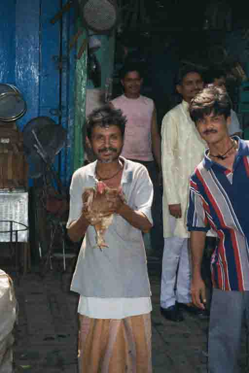
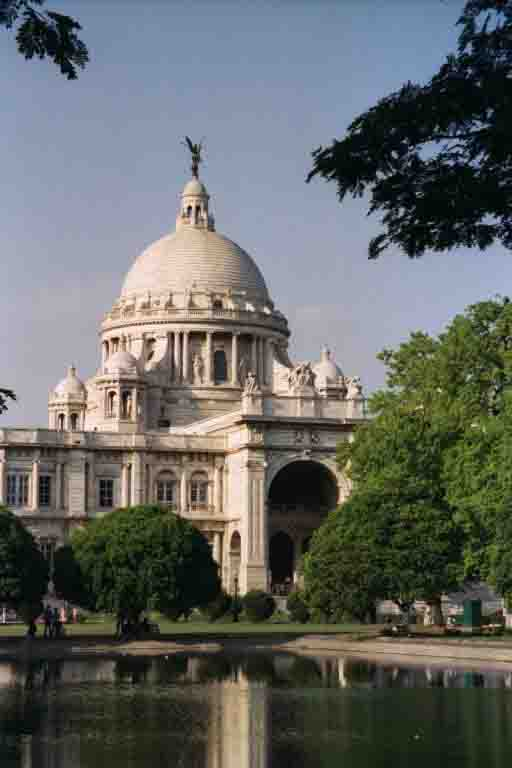
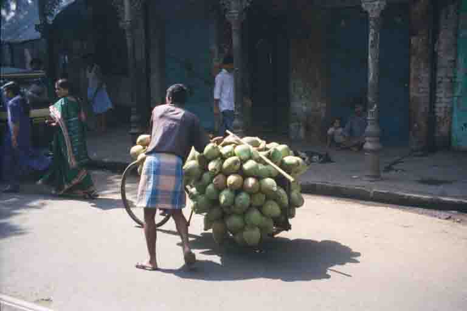
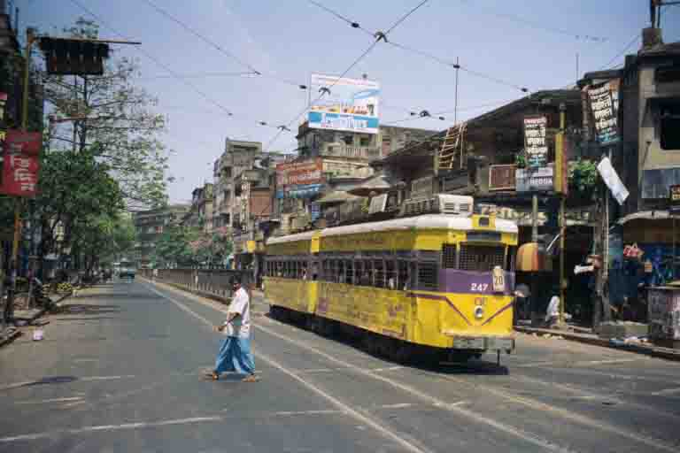

Calcutta - City of Crows!
Calcutta, India
The one time capital of British India Calcutta is probably the most famous city in India (although perhaps infamous would be a more accurate description). It was founded in 1690 by an English merchant called Job Charnock who persuaded the Emperor Aurangzeb to lease the land to the East India Company. Up until very recently this has been accepted as fact, although currently in Calcutta there is a committee that has been set up by the courts to discover whether Job Charnock was actually the founder! Anyway, in 1756 the city was captured by the Nawab of Bengal, Suraj-ud-Daula. Most of the British merchants managed to escape but 146 were imprisoned for a night in a 6m x 5m guardroom with only one window. This event in history became known as the 'Black Hole of Calcutta'. The British managed to recapture the city a year later and hence commenced Calcutta's transformation into the capital of British India.
Some of the cities most impressive buildings were put up in the following years and as the city grew, so too did the population until it was a bustling city full of soldiers, traders, administrators and their families and every trade imaginable was represented here. In 1911 the British decided to transfer their capital to Delhi and thus began Calcutta's demise from the most properous city in the country.
Stepping off of the train at Howrah Terminus we were instantly heat by the heat and the overwhelming humidity, reminding us that April is not the month of choice for visiting Calcutta (it is now called Kolkata - although I prefer to stick to Calcutta). No two Indian cities are the same, or even vaguely similar, and this one was certainly the busiest and hottest yet! (We read later that apparentely the Hooghly Bridge, a huge metal structure over the river, expands as much as four feet on a hot summer's day!!)
We booked into the Fairlawn Hotel, an establishment infamous for it's ability to have made time stand still! In the Fairlawns the Raj still prospers and as you walk through the doors you fell like you're back in the 1940s. The walls are covered with memorabilia, a picture of the Queen Mum here, Prince Charles there and of course, the proprietor, Mr Violet Smith, with her favourite guest, Felicity Kendall! Afternoon tea is taken on the lawn, hot water is available at specified times during the day (very specific times indeed - 7:30, 8:30, 17:00 and 18:00!!) and dinner, which looks like something you would get at a boarding house in Blackpool, is served on the dot of 19:30 at the sound of a gong. God help you if you are late, because the cumerbunded waiter will rush up to you and whisper discreetly into your ear, 'You are late, Sahib'! But let us not jest too much - although the place is sometimes quite awful I am English after all and I do quite like the occasional afternoon tea! And, even the bland food was a welcome relief to my overworked stomach!
Early one Sunday morning Sue and I caught the newly launched Heritage Tram for a sightseeing tour of the city. Most of the previous day was spent trying to buy the tickets so it came as no surprise that we were the only Western tourists onboard. We went past some of Calcutta's great colonial buildings - the Writer's Building, Government House, St.Andrews Church and the truly amazing GPO. We crawled through the busy streets and everyone stopped to look and wave at this very glamorous looking tram (my - you should see the others!) They seemed particularly interested in the fact that Sue was holding a camera. One man was so pleased to see her that he held up his chicken to be photographed. It must've been a prizewinning chook or maybe he was just showing us his lunch!
One of the main reasons for visiting this city was so that Sue and Viv could continue some research into their family history. Sue had visited a number of years before and had a number of leads for us to follow. Unfortunately on the designated day Viv was particularly unwell and so as Sue, Heleyne and me trawled through the births, deaths and marriage records in St Theresa's Church while Viv just lay down on a pew and went to sleep! The records were amazingly well kept and detailed and so we gleaned some more info for the Crow family tree. The rest of the morning was spent walking around cemeteries trying to find graves - we found one side of the family at Lower Circular Road Cemetery and from the earlier records we knew that Sue's Great Grandmother was also buried here somewhere and so we went to the chapel to investigate further. This turned out to be a huge disappointment for Sue, the curator opened up a totally dilapidated record book from 1900 and inside on a tiny piece of torn paper you could make out the words Crow, but nothing else. So, as the cemetery is absolutely enormous it seems that that grave is now lost.
We had though, managed to find a number of addresses that the Crows had lived in and a very patient driver took us all over the city to see them. Some had been demolished, others were totally derelict and some were actually still lived in. Even these were in a very poor state of repair. But, it was still possible on a few occasions to stand there and imagine how it used to look when Sue's dad was growing up here - the wide roads, the huge shady trees, the huge houses with tall perimeter walls and large elaborate iron gates. The locals seemed hugely curious as two foreigners walked up and down the streets, took photographs and crossed things off of a list. They probably thought we were from the government, deciding which house to bulldoze next!
The people of Calcutta seem genuinely more friendly and smile a whole lot more than people in any other parts of the country. They didn't seem particularly interested in us as tourists to sell things to and we received very little hassle. In fact, Calcutta, for all the stories you hear of the squalor, the slums and the dirt, was in fact a very pleasant city to spend some time in, maybe even our favourite. The poverty is slightly more startling than elsewhere in India because it's everywhere, unlike Delhi and Mumbai where it has been pushed to the city limits. But, the beggars are friendly and even they have a smile to give! So, Calcutta is somewhere we will definitely return to. There is still a whole lot more family history to dig up, I'm sure, and plenty more small backstreets to explore, but perhaps next time we'll chose a slightly more friendly season!
Some of the cities most impressive buildings were put up in the following years and as the city grew, so too did the population until it was a bustling city full of soldiers, traders, administrators and their families and every trade imaginable was represented here. In 1911 the British decided to transfer their capital to Delhi and thus began Calcutta's demise from the most properous city in the country.
Stepping off of the train at Howrah Terminus we were instantly heat by the heat and the overwhelming humidity, reminding us that April is not the month of choice for visiting Calcutta (it is now called Kolkata - although I prefer to stick to Calcutta). No two Indian cities are the same, or even vaguely similar, and this one was certainly the busiest and hottest yet! (We read later that apparentely the Hooghly Bridge, a huge metal structure over the river, expands as much as four feet on a hot summer's day!!)
We booked into the Fairlawn Hotel, an establishment infamous for it's ability to have made time stand still! In the Fairlawns the Raj still prospers and as you walk through the doors you fell like you're back in the 1940s. The walls are covered with memorabilia, a picture of the Queen Mum here, Prince Charles there and of course, the proprietor, Mr Violet Smith, with her favourite guest, Felicity Kendall! Afternoon tea is taken on the lawn, hot water is available at specified times during the day (very specific times indeed - 7:30, 8:30, 17:00 and 18:00!!) and dinner, which looks like something you would get at a boarding house in Blackpool, is served on the dot of 19:30 at the sound of a gong. God help you if you are late, because the cumerbunded waiter will rush up to you and whisper discreetly into your ear, 'You are late, Sahib'! But let us not jest too much - although the place is sometimes quite awful I am English after all and I do quite like the occasional afternoon tea! And, even the bland food was a welcome relief to my overworked stomach!
Early one Sunday morning Sue and I caught the newly launched Heritage Tram for a sightseeing tour of the city. Most of the previous day was spent trying to buy the tickets so it came as no surprise that we were the only Western tourists onboard. We went past some of Calcutta's great colonial buildings - the Writer's Building, Government House, St.Andrews Church and the truly amazing GPO. We crawled through the busy streets and everyone stopped to look and wave at this very glamorous looking tram (my - you should see the others!) They seemed particularly interested in the fact that Sue was holding a camera. One man was so pleased to see her that he held up his chicken to be photographed. It must've been a prizewinning chook or maybe he was just showing us his lunch!
One of the main reasons for visiting this city was so that Sue and Viv could continue some research into their family history. Sue had visited a number of years before and had a number of leads for us to follow. Unfortunately on the designated day Viv was particularly unwell and so as Sue, Heleyne and me trawled through the births, deaths and marriage records in St Theresa's Church while Viv just lay down on a pew and went to sleep! The records were amazingly well kept and detailed and so we gleaned some more info for the Crow family tree. The rest of the morning was spent walking around cemeteries trying to find graves - we found one side of the family at Lower Circular Road Cemetery and from the earlier records we knew that Sue's Great Grandmother was also buried here somewhere and so we went to the chapel to investigate further. This turned out to be a huge disappointment for Sue, the curator opened up a totally dilapidated record book from 1900 and inside on a tiny piece of torn paper you could make out the words Crow, but nothing else. So, as the cemetery is absolutely enormous it seems that that grave is now lost.
We had though, managed to find a number of addresses that the Crows had lived in and a very patient driver took us all over the city to see them. Some had been demolished, others were totally derelict and some were actually still lived in. Even these were in a very poor state of repair. But, it was still possible on a few occasions to stand there and imagine how it used to look when Sue's dad was growing up here - the wide roads, the huge shady trees, the huge houses with tall perimeter walls and large elaborate iron gates. The locals seemed hugely curious as two foreigners walked up and down the streets, took photographs and crossed things off of a list. They probably thought we were from the government, deciding which house to bulldoze next!
The people of Calcutta seem genuinely more friendly and smile a whole lot more than people in any other parts of the country. They didn't seem particularly interested in us as tourists to sell things to and we received very little hassle. In fact, Calcutta, for all the stories you hear of the squalor, the slums and the dirt, was in fact a very pleasant city to spend some time in, maybe even our favourite. The poverty is slightly more startling than elsewhere in India because it's everywhere, unlike Delhi and Mumbai where it has been pushed to the city limits. But, the beggars are friendly and even they have a smile to give! So, Calcutta is somewhere we will definitely return to. There is still a whole lot more family history to dig up, I'm sure, and plenty more small backstreets to explore, but perhaps next time we'll chose a slightly more friendly season!

'Chickenman' who insisted on having his photo taken as we rode past in a tram!

A very grand reminder of the Raj, the Victoria Memorial, Calcutta

The man who brought refreshment on a very hot day in Calcutta

One of Calcutta's rather dilapidated trams

We refrained from joining these men bathing in the Hooghly River, Calcutta